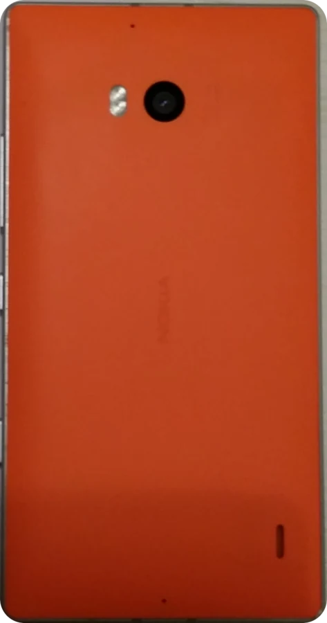

Lumia 930
The 930 (RM-1045) shares its chip with the 1520, so the port starts from the 1520 code. On 13 November 2026 it ran on a real Lumia 930 for the first time: the installer set up the boot chain from the phone’s own Windows boot manager, and Android 11 reached the setup screen. Since 14 November both cameras, the vibration motor and the motion sensors work too, and the first test build is out.

Working on the test phone
- lk1st and TWRP, started from the Windows Phone boot manager
- Android 11 up to the setup screen, all four CPU cores
- AMOLED display with brightness and screen off
- Touch, double tap to wake
- Wi-Fi and Bluetooth
- NFC
- SIM, LTE mobile data and SMS
- Rear camera with autofocus and flash, and the front camera: photos and video; the rear camera opens in under 3 seconds
- Rear LED flash and torch
- Video playback with hardware decoding
- Vibration, driven through the audio chip as on the original system
- Sound from the speaker
- Accelerometer, gyroscope and magnetometer; light and proximity sensor
- Charging, up to 4.35 V with the original battery
- ADB
Still to do
- Microphones: fixed in the latest test build, waiting for a voice test
- Calls: earpiece and microphone not tested yet
- GPS: no satellite fix yet, under investigation on the modem side. With Google apps installed, network location (Wi-Fi and cell) works in Maps
Install
From a Lumia 930 (RM-1045) still on Windows Phone. Every step has run on a real phone; the installer’s one-click Full mode stays off on the 930 until it has run end to end, so the steps are done one by one from its advanced tools. This erases Windows and everything on the phone: make the backups the installer offers and keep them.
- Unlock the bootloader with WPinternals on a Windows PC, then switch the phone to mass storage mode.
- Download the installer and put the ROM zip with its
SHA256SUMSin itsromfolder; the installer downloads the TWRP by itself. Start it and pick Lumia 930. - Advanced tools: Backup, then Firmware, then Boot chain. At the next start the phone stops in lk1st’s fastboot menu; run Check lk1st.
- Advanced tools: Android partitions. This erases Windows.
- Clean mode: TWRP in RAM, data formatted, ROM installed. The first boot takes a few minutes. Later builds install with the Update mode, without a wipe.
Credits
The 930 port starts from the Lumia 1520 one, so everyone credited there is part of it too. For the 930 itself:
- Markynose (Mark Buchok): lumia930-linux, with the 930 boot chain, touch and hardware notes.
- 2314372037 (zh/hao): LineageOS 17.1 on the 930, used as a reference for its panel, audio and vibration.
- imbushuo (Bingxing Wang): BootShim and the 930 lk; rickliu2000: Lumia930Pkg.
- Mainline4Lumia (Dominduchami): lk2nd support for the 930; Android4Lumia (J0SH1X, sonic011gamer): the 930 kernel and lk2nd.
- sonic011gamer: the Lumia driver packages the 930 firmware comes from.
- KorelisLabs (lumia-1520-mainline), msm8916-mainline (lk2nd) and René Lergner (HeathCliff, WPInternals).
- LineageOS and TheMuppets, TeamWin (TWRP) and Android4Lumia950 (djokcho, EpicLPer, j0sh1x, sonic011gamer and the community).